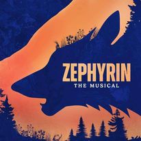
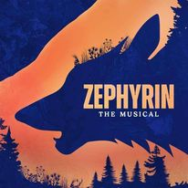

MY TALENTS
I am an artist and I like to draw or sculpt with clay, I also like play games online or outside like futsal/football, video games, I was also in a school produced musical known as Zephyrin back from november as a stage hand and much more.
 
